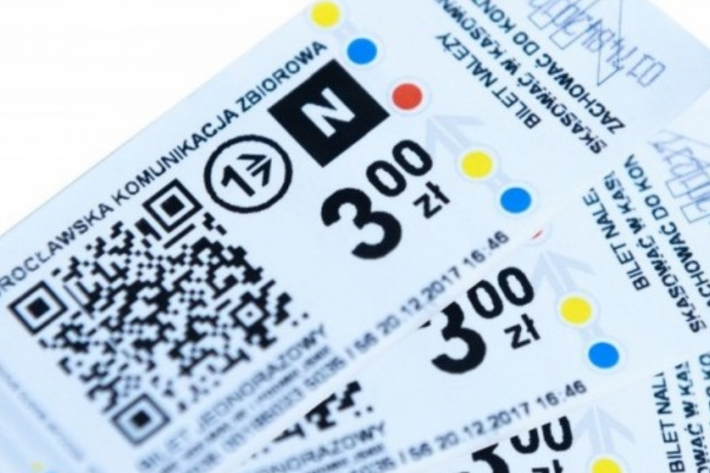

<div class="container">
  <div class="row text-center">
    <div class="col-md-6">
      
    </div>
    <div class="col-md-6">
      <div id="buy-text">
      <p>Zarządzanie biletami nigdy nie było tak proste. Oferujemy najczęściej wybierane rodzaje biletów MPK Wrocław, na przykład: </p>
      <ul>
        <li><strong>Bilety jednorazowe</strong> - uprawniające do jednorazowego przejazdu komunikacją miejską Wrocławia jednym środkiem transportu;</li>
        <li><strong>Bilety czasowe</strong> - uprawniające do korzystania z nieograniczonej liczby przejazdów na wszystkich typach linii przez określoną liczbę minut lub godzin;</li>
        <li><strong>Bilety długoterminowe</strong> - uprawniające właściciela do korzystania z nieograniczonej liczby przejazdów na wszystkich typach linii trawjących przez określonę liczbę dni lub miesięcy;</li>
      </ul>
      </div>
      <div id="adv-buttons">
        <button class="buy-button" role="button" routerLink="/ticket">Przejdź do zakupu biletów</button>
      </div>
    </div>
  </div>
</div>
